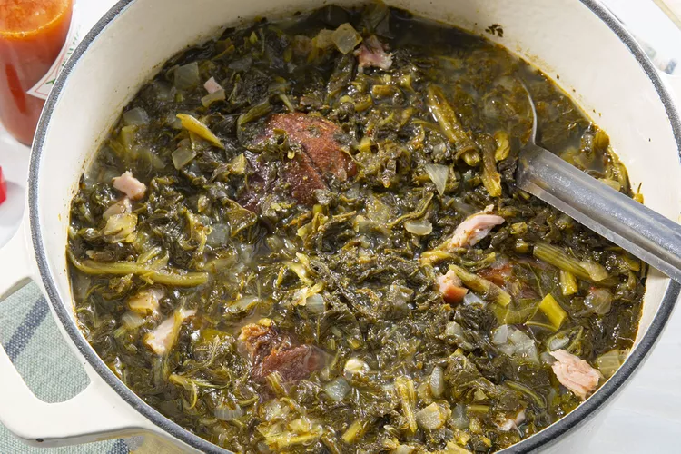

Collard Greens

Description
A classic dish with deep roots in the south. The greens are slow simmered with ham hocks for that all
time classic smokey taste. You can never say no to these greens.
Ingredients
- 2 medium sweet onions, finely chopped
- 2 smoked ham hocks
- 4 cloves garlic, finely chopped
- 3(32 ounce) containers chicken broth
- 3(1 pound) packages collard greens, trimmed
- 1/3 cup apple cider vinegar
- 2 tablespoons white sugar
- 1 1/2 teaspoons salt, or to taste
- 3/4 teaspoon ground black pepper, or to taste
Steps
- Gather all ingredients
- Combine onions, ham hocks, and garlic in stockpot; add chicken broth. Cook mixture over medium heat until meat is falling off the bone, 1 to 2 hours.
- Stir collard greens, vinegar, sugar, salt, and pepper into the broth mixture; cook until greens have reached desired tenderness, about 2 more hours.